Как удалить Историю в Инстаграме через телефон

- Как удалить размещенную Историю через телефон
- Убрать с компьютерной версии
- Удаление незагруженной Истории
- Можно ли удалить все Истории сразу
- Удалить Истории из Актуального
- Где находятся черновики Сторис в Инстаграме*
- Почему История не удаляется
- Черный экран в Сторис: как решить
- Восстановление удаленных Историй
Удалить Историю в Инстаграме* возможно после того, как автор опубликовал её в общий доступ: для друзей или для всех посетителей страницы. Stories можно удалить из черновиков или архива, в зависимости от того, когда была опубликована. Как и размещение, удаление занимает не более пары минут.
Как удалить размещенную Историю через телефон
Чтобы удалить Сторис в Инстаграме*, пользователю нужно убедиться, что она была правильно размещена. То есть, запись полностью прогрузилось и не возникает никаких проблем при попытке её посмотреть повторно. Удалить обычную Историю в Инстаграме*:
- Зайти в профиль – нажать по значку своей аватарки.
- Появится недавно опубликованная запись.
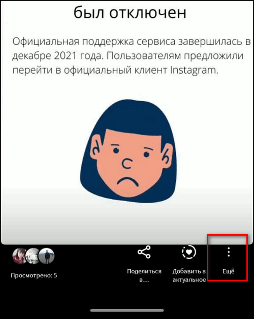
- Снизу три точки – Удалить.
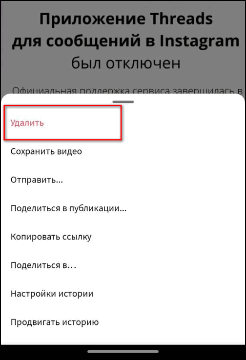
Подтвердить действие.
Если убрать Сторис, то она не сохранится в Архиве. У пользователя останется всего один способ, как в дальнейшем восстановить – через сохраненные файлы на смартфоне. Если снимок был сделан непосредственно в самом Инстаграме*, то прежде чем удалить, нужно выбрать функцию: «Сохранить» или создать скриншот изображения. Так автор не потеряет созданные материалы, а относительно видео – придется скачивать или заранее убедиться, что включена функция «Хранить копии на устройстве».
Убрать с компьютерной версии
С ПК-версии убрать Сторис также просто, как и в мобильной. Отличие в том, что запись не появится в Ленте и чтобы её просмотреть – нужно перейти ко вкладке: «Мой профиль». Как убрать с компьютера:
- Зайти в Instagram* с компьютера – открыть вкладку: «Мой профиль».
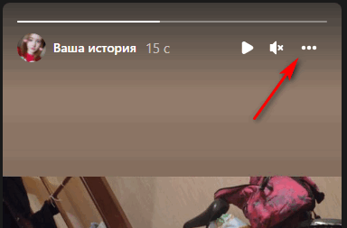
- Нажать по аватарке – появится недавно опубликованное видео или фото.
- Нажать сверху три точки: «Удалить» - подтвердить действие.
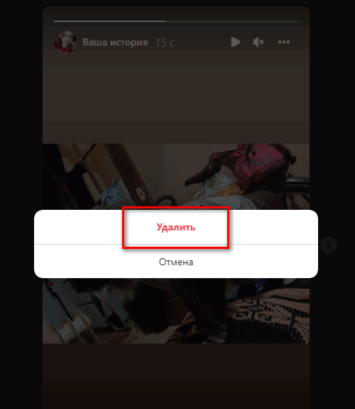
Далее, владельцу профиля необходимо обновить страницу, чтобы исчез значок о недавно опубликованной Истории. Сторис будет удалена, как с мобильной, так и компьютерной версии. Поэтому посмотреть её заново получится только во вкладке: «Недавно удаленные». Найти материалы, которые были недавно удалены:
- Зайти в свой профиль с мобильной версии.
- Настройки – Аккаунт.
- Недавно удаленные – перейти к материалам, которые нужно восстановить.
Вернуть можно лишь ту Историю, которая была удалена не более 30 дней назад.
Удаление незагруженной Истории
Незагруженная История – это та, которая окончательно не была добавлена в социальную сеть. Причиной может стать, как внезапный сбой, так и проблемы с подключением к сети. Владелец профиля должен первоначально проверить работу интернета, а после – приступить к удалению.
- Перейти в социальную сеть – нажать по значку Истории.
- На экране появится: «Невозможно загрузить» - снизу: «Попробовать еще раз».
Если повторное размещение не помогло, то у автора есть всего один вариант – отключить интернет и попробовать очистить список публикаций еще раз.
- Зайти в Настройки смартфона – Wi-Fi или мобильные данные.
- Отключить – перезапустить телефон.
- Заново зайти в Инстаграм* – нажать снизу три точки.
- Удалить – подтвердить действие.
Можно ли удалить все Истории сразу
Убрать сразу все Сторис не получится: в Инстаграме* такая функция просто не предусмотрена. У владельца страницы есть всего один вариант: постепенно удалять каждую.
Помимо хранения в общем доступе, Истории хранятся и в Архиве. Поэтому, если нужно убрать предыдущие публикации:
- Зайти в Инстаграм* – нажать сверху по трем полоскам.
- Архив – выбрать категорию: «Истории».
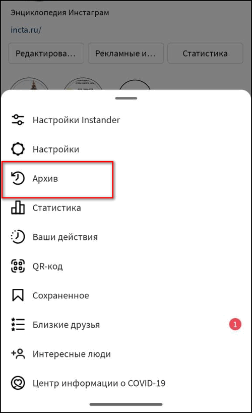
Нажать по публикации – снизу три точки: «Удалить».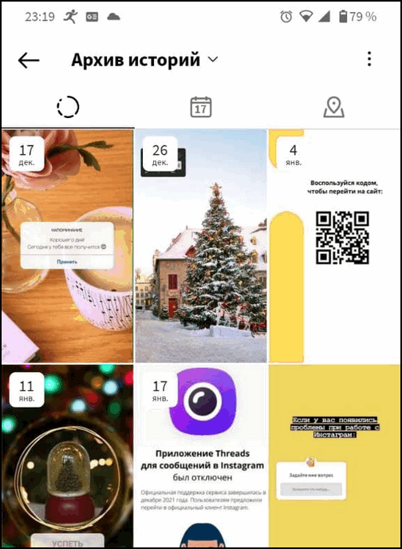
И делать то же самое с последующими постами. Удалить все сразу не получится и Архив доступен только с мобильной версии. Если автору нужно убрать несколько последовательных записей:
- Перейти к недавно добавленным Историям.
- Нажать снизу три точки – Удалить.
- Выполнить то же со следующей.
Даже если автором был размещен видеоклип, который разбит на отдельные части, убрать все записи разом не получится.
Удалить Истории из Актуального
В Актуальных находятся публикации, которые автор выделил «как важные». И если владелец страницы захочет убрать одну или несколько записей, ему достаточно снять с них выделение. Пост останется в Архиве, откуда его можно в любое время убрать.
- Перейти в свой профиль – нажать по Закрепленным Историям и держать, пока не выйдет меню.
- Удалить или редактировать.
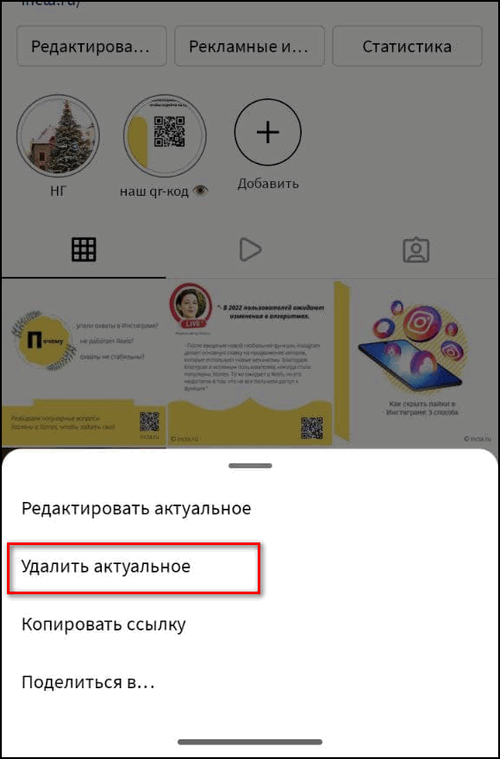
- Нажать на Актуальное - перейдя в него.
- Нажать 3 точки справа снизу.
- Редактировать - убрать значок выделения на публикации.
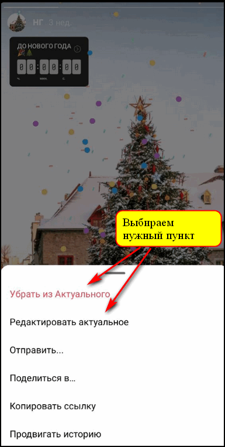
- Сверху: «Сохранить».
Можно отметить одну или сразу несколько записей, которые были добавлены в «Закрепленные». Если удалить целую подборку Актуального, то все собранные публикации останутся в Архиве, но уже не будут в коллекции. Отыскать их можно лишь по датам, когда была добавлена запись.
Где находятся черновики Сторис в Инстаграме*
Черновики в Инстаграме* – это публикации, которые были сохранены для последующего размещения в социальной сети. То есть, автор временно приостановил редактирование, либо отложил пост для того, чтобы разместить в определенное время. Как создать Черновик:
- Зайти в Историю – выбрать фото или видео из Галереи.
- Далее – добавить стикер или текст.
- Назад – появится уведомление: «Сбросить снимок» и «Сохранить как черновик».
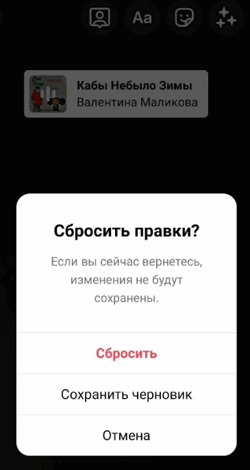
Обратите внимание, что черновики автоматически удаляются через 7 дней.
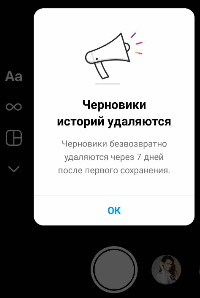
Чтобы посмотреть и опубликовать черновик:- Зайти в Сторис – выбрать снизу категорию откуда можно добавить фото.
- Появится вариант: «Черновики» - выбрать контент.
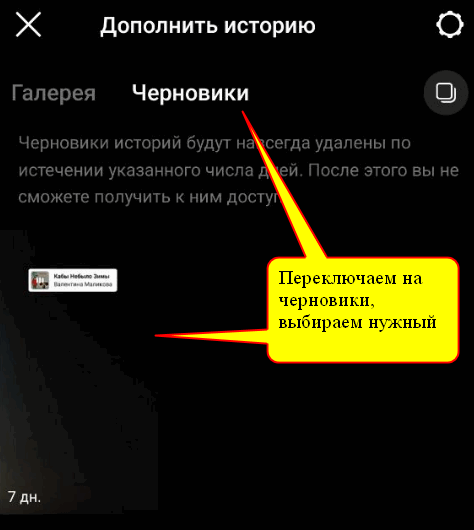
Но в этой разделе хранятся материалы до того момента, как владелец учетной записи не удалит временные файлы или вовсе не переустановит приложение. То есть, зависят от кэша приложения, хранения данных на самом устройстве.
Почему История не удаляется
Причинами, почему удалить фото из Сторис в Инстаграме* не получается, становятся:
- отсутствие подключения к сети. Нужно заново подключиться к сети или попробовать включить мобильные данные;
- проверить наличие свободного пространства во внутреннем хранилище. Перейти к настройкам приложений, отыскать Инстаграм* и убрать кэш;
- обновить версию приложения;
- перезапустить приложение. Произошел сбой, который влияет на возможность удаления отдельных постов.
Если при переходе в раздел: «Истории» пользователь видит уведомление: «Не удалось загрузить», значит проблема в обновлениях или отсутствии подключения к сети. В этом случае нужно перейти к точке доступа Wi-Fi или мобильным данным и выполнить цикл «включить-выключить». Еще один метод: зайти в настройки смартфона и удалить кэш. Это можно сделать для каждого отдельного приложения или выбрать общую папку. При удалении кэша будут стерты черновики не только в Инстаграме*, но и других социальных сетях, где есть такая функция.
Черный экран в Сторис: как решить
Зачастую такая ошибка встречается, если снимок был сделан не через Историю, а находится в Галерее. При загрузке материалов, которые хранятся в памяти устройства, на экране может появиться либо: "Загрузка невозможна», либо «черный экран». Как решить ошибку:
- переустановить Инстаграм*;
- уменьшить размер изображения или его объем;
- попробовать опубликовать с другого устройства.
Случается, что проблема с размещением медиафайла связана с работой аккаунта. Даже если владелец страницы размещает с другого устройства – появляется темный экран вместо снимка. В таком случае, нужно временно отключить страницу и через 1-2 дней попробовать снова опубликовать фото. Пользователи также указывают на ошибку, которая связана с размещением видео: те, которые длятся не более 3 секунд – публикуются. Автор может попробовать один способ, как восстановить активность: через съемку в самих Историях.
Восстановление удаленных Историй
Хранятся удаленные Истории в настройках аккаунта. С последним обновлением была добавлена функция, которая временно хранит ненужные файлы. Но владелец профиля может отключить её, если она не нужна. Как вернуться удаленный снимок:
- Зайти в Инстаграм* – Настройки.
- Аккаунт – Недавно удаленные.
- Нажать по снимку – Восстановить.
Или, еще один вариант – посмотреть в Галерее устройства. Если владелец включил создание копий или же не удаляет файлы из внутреннего хранилища – копия должна сохраниться там. Это касается и размещенных Сторис, и публикаций